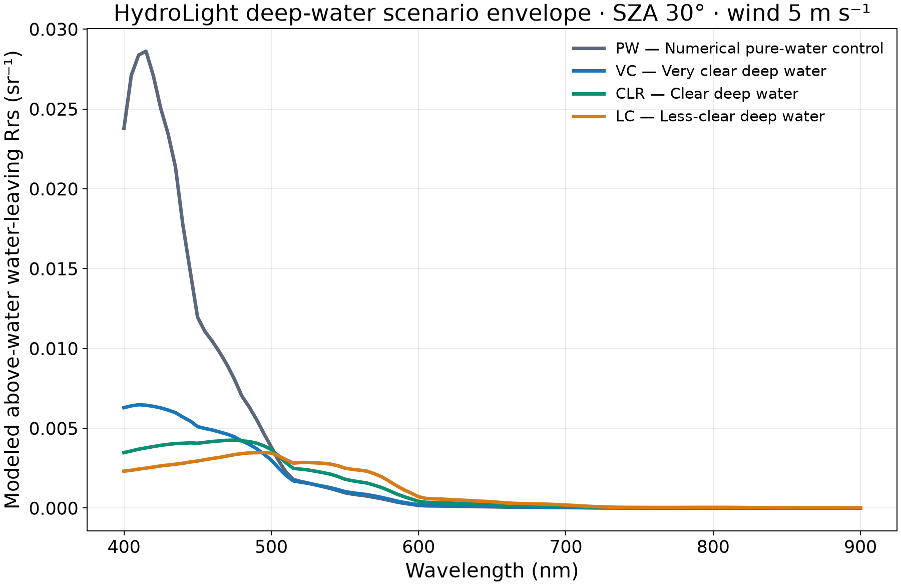
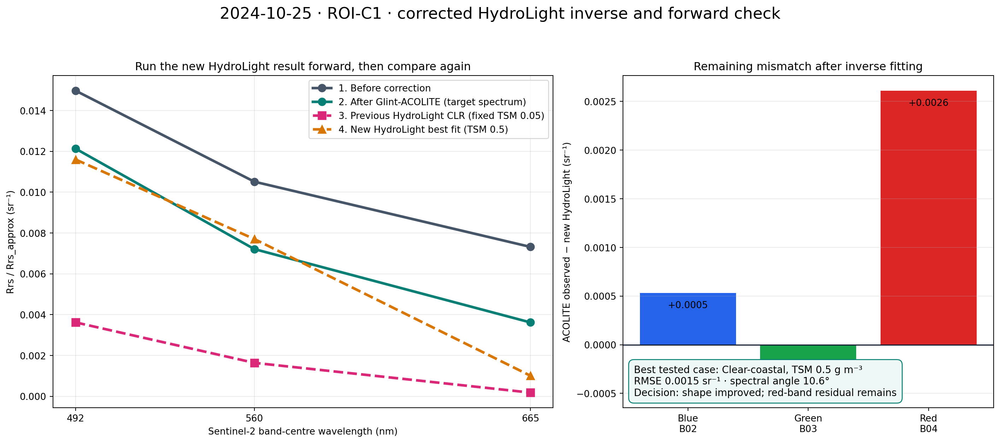
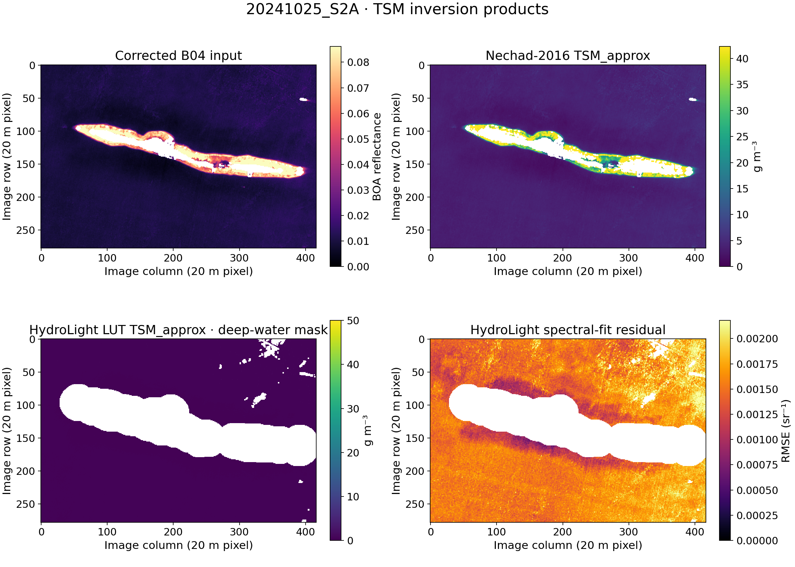
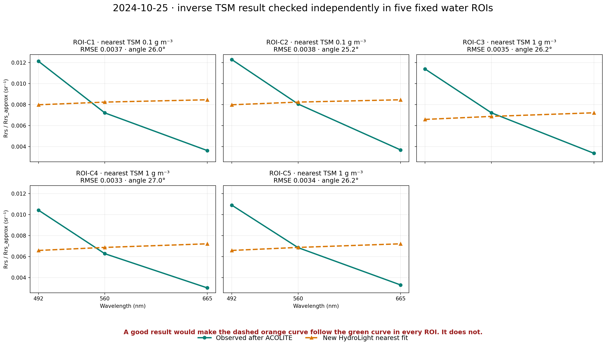
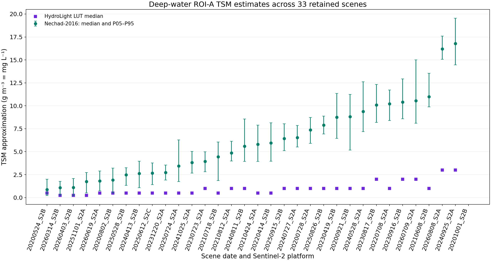
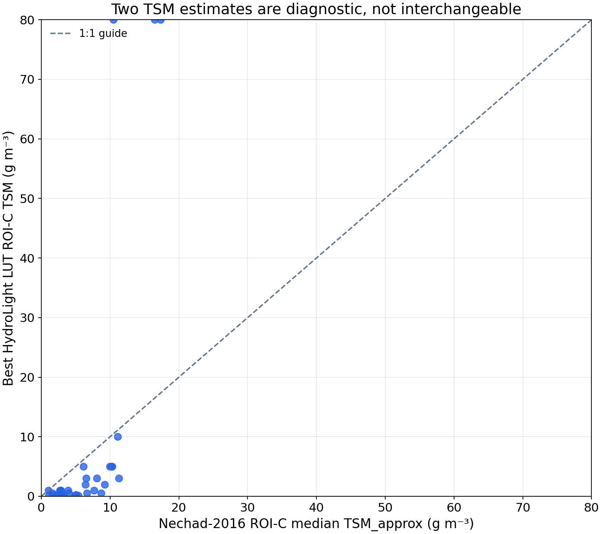
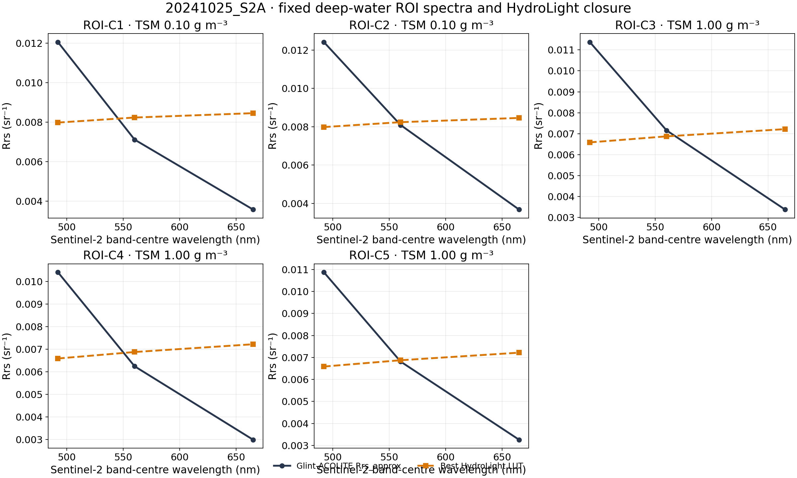

Step-by-step masking, Glint-ACOLITE, Hedley and B12 results, followed by method comparison and HydroLight evaluation.
First: what is sunglint?
Sunglint is sunlight reflected by the water surface toward the satellite sensor. It adds surface-reflected energy to the water-leaving signal, making water appear brighter than it should.
Sun or bright sky→water surface→surface reflection→satellite sensor
The sensor receives both the signal leaving the water and unwanted surface reflection. The correction estimates the surface-reflection part and subtracts it without removing the real water signal.
What signs are consistent with glint?
Bright silver or white streaks and patches over water.
A broadband positive spectral offset across visible and longer wavelengths.
Visible and NIR/SWIR signals vary together over optically similar water.
The spatial pattern follows surface-wave texture rather than reef or sediment structure.
What can look similar?
Haze: smooth atmospheric brightening, often stronger in blue.
Thin cloud or cirrus: cloud-shaped brightness over land and water.
Shallow bottom or reef: patterns follow depth and benthic features.
Sediment, boats, wakes and bright-land adjacency.
A real Tidung example: what evidence is called glint?
The clearest presentation case is shown before any correction. The bright-water target and darker comparison water are evaluated with the same masks and original L2A bands.
Why is BOA reflectance unitless? Reflectance is the ratio of reflected to incident light; 0.05 means 5%. Rrs is different: radiance divided by irradiance, so its unit is sr⁻¹.
Original L2A RGB. Look for bright streak-like water patterns, but do not decide from RGB alone.B11 BOA reflectance. Valid water should normally be dark in SWIR; elevated water values support a surface or atmospheric contribution.B12 BOA reflectance. It is supporting evidence, not a direct measurement of glint.
What this L2A experiment produces
Processing starts from Sen2Cor Level-2A BOA reflectance. The retained outputs are corrected BOA reflectance and Rrs_approx = corrected BOA / π. HydroLight is used as a model-scenario comparison, not as field validation.
The study follows one fixed Stage 00–09 sequence
Methods and their roles
Glint-ACOLITE · primary
Transfers a B11/B12 surface-reflection reference to visible wavelengths using atmospheric transmittance and Fresnel terms. All intermediate products are retained.
ρgc(λ)=ρBOA(λ)−K(λ,j*)ρg,ref
Hedley · benchmark
Fits the visible–B8 relationship in a homogeneous offshore-water candidate ROI. A wrong ROI can subtract bottom or turbidity signal.
ρgc(λ)=ρ(λ)−bλ[ρB8−ρB8,min]
NIR–SWIR/B12 · baseline
Directly subtracts B12 as a simple sensitivity baseline under the near-zero water-leaving SWIR assumption.
ρgc(λ)=ρBOA(λ)−ρB12
ρBOA(λ): original L2A BOA surface reflectance at wavelength λ; dimensionless.
A scene can pass the cloud/water gate without containing strong glint, and a glint-prone geometry can still be unusable because of cloud or haze. These are separate decisions.
A. Project data-quality gate
ACCEPT ⇔ water ≥95% AND contamination ≤2%
Contamination is the local SCL fraction labelled cloud shadow, medium/high cloud, cirrus or snow/ice. This gate controls processing suitability; it is not a glint threshold.
B. Glint-evidence screen
The dashboard combines geometry risk, visible appearance, VIS–SWIR behaviour and spatial structure, while separately checking atmospheric and bottom-related alternatives.
The earlier 25°/35°, VIS–B12 r≥0.45 and rhog percentile cutoffs were internal heuristics. They are no longer presented as universal scientific thresholds.
All L2A products relative to the project input gate
Each point is one scene. The lower-right region passes both the ≥95% water and ≤2% contamination criteria.
How to read: points outside the green region remain in the inventory but do not proceed to correction. This figure says nothing yet about whether glint is present.
Stage 00–09 · repeated identically for every date
Scene results, by-products and QC
Choose a date. All sections update together, and Glint-ACOLITE is shown before the two comparison methods.
Interactive scene map on Esri World Imagery
Choose one clearly named layer. The raster is georeferenced over the Esri background; change opacity to compare it with the island and surrounding water.
00
Scene selection and glint diagnosis
Question: is the scene usable, and do observations before correction support glint rather than haze, cloud or bottom signal?
Full L2A scene with the Tidung analysis crop. The crop defines location; masks define the pixels used.Original Tidung RGB before correction. Bright water is only a candidate until masks and spectra are checked.
Geometry is supporting information
Observed evidence before correction
Band
Centre wavelength
Used for glint screen?
Used in correction?
Exported Rrs_approx?
Role
Evidence chain
01
Masks applied before correction
Land, cloud, shadow, cirrus, snow/ice and a 60 m buffer are removed before fitting or subtraction.
QC: masked pixels are stored as NoData, not as zero, and are excluded from every method.
02
Stored DN to BOA surface reflectance
Sentinel-2 L2A pixel integers are converted using the product-specific offset and quantification value before correction.
DN is the stored integer. BOA surface reflectance is dimensionless. A worked range check confirms that the conversion was applied before glint correction.
03
ROI definition and audit
Every statistic must disclose which pixels produced it. “Deep”, “clear” and “shallow” are treated as candidates unless supported by independent depth information.
A · Hedley candidateB · glint targetC · HydroLight candidateD · nearshore patternE · low-glint control
Distance from land does not prove water depth. ROI-A is an offshore candidate; ROI-D is a nearshore-pattern ROI. Bathymetry is required before calling them confirmed deep or shallow water.
Hedley is especially sensitive to ROI choice: if B8 varies because of bottom, turbidity or adjacency, the fitted slope can remove real aquatic signal.
ROI
Purpose
Selection rule
Valid pixels
Interpretation limit
04
Glint-ACOLITE — primary correction
The complete chain is shown in calculation order. Every input, numerical term, map and retained output is displayed at the step where it is produced.
Atmospheric and geometry inputs
AOT describes aerosol loading, while geometry defines the optical path and specular-reflection risk. AOT is not a glint detector.
AOT 550 nm · atmospheric input
AOT 550 nm · dimensionless
QC: inspect spatial AOT consistency and cloud/haze alternatives before treating bright water as glint.
Atmospheric transmittance t(λ)
Two-way direct transmittance represents attenuation along the Sun-to-surface and surface-to-sensor paths. It transfers the SWIR reference to each visible wavelength.
Band
Wavelength (nm)
t(λ), dimensionless
How to read: X is wavelength in nm; Y is dimensionless transmittance. Values must be finite and between 0 and 1.
Fresnel interface reflectance F(λ)
Fresnel reflectance is the wavelength- and geometry-dependent fraction reflected at the air–water interface.
Band
Wavelength (nm)
F(λ), dimensionless
How to read: this is an interface term, not an image brightness map and not water-leaving Rrs.
B11/B12 source bands, transferred candidates and pixel-wise selection
The original B11 and B12 inputs are shown first. Both are then transferred to B02, and the smaller valid candidate is selected per pixel to reduce excessive subtraction.
QC: inspect whether the selected pattern follows open-water surface structure rather than land edges, clouds or bottom features.
Selected spatial glint reference ρg,ref
The pixel-wise B11/B12 decision produces one selected spatial surface-reflection reference.
ρg,ref · selected spatial glint reference
ρg,ref · dimensionless BOA-reflectance term
Spectral transfer factor K(λ)
K transfers the selected SWIR surface-reflection reference to each output wavelength using atmospheric-transmittance and Fresnel ratios.
Output band
Wavelength (nm)
K from B11
K from B12
Estimated glint term for every output band
The selected spatial reference is multiplied by the appropriate K factor. All three modeled BOA glint terms are displayed below.
Glint-corrected BOA reflectance
The estimated glint term is subtracted band by band from the original BOA reflectance. All corrected bands and the corrected RGB composite are shown.
Retained Rrs approximation
Each corrected BOA band is divided by π. These three georeferenced Rrs_approx rasters are the final spectral products from the present L2A experiment.
QC: estimated glint must not trace bottom objects; corrected values should not become widely negative; lower-glint comparison water should change much less than the glint target.
Before versus after Glint-ACOLITE
The original and corrected images are paired directly. Every B02/B03/B04 pair uses the same −0.015 to 0.11 BOA-reflectance colour range; both RGB panels use the same visual stretch.
How to judge: surface-bright streaks should decrease over valid water, while reef and nearshore structure should remain recognizable. Excluded land, cloud, haze, shadow, cirrus, snow and the 60 m buffer remain NoData.
05
Hedley — empirical benchmark
The regression ROI, VIS–B8 relationship, fitted coefficient, removed term and corrected output are shown together.
Direct before/after comparison
The selected-band pair uses the same −0.015 to 0.11 BOA-reflectance scale. The RGB pair uses the same stretch.
A high R² proves a relationship in the training ROI, not that the relationship is purely glint. ROI sensitivity should be checked before interpreting strong subtraction as success.
06
NIR–SWIR/B12 — simple baseline
This comparator assumes the water-leaving B12 contribution is near zero and directly subtracts B12 from each visible band.
ρgc(λ)=ρBOA(λ)−ρB12
Direct before/after comparison
The selected-band pair uses the same −0.015 to 0.11 BOA-reflectance scale. The RGB pair uses the same stretch.
The identical removed term across visible bands makes this baseline easy to audit, but it can overcorrect when B12 contains residual atmospheric or adjacency signal.
07
Correction quality control
No single metric decides success. Spatial appearance, spectral shape, residual glint, negative values and the held-out low-glint control are read together.
5.1 Spectral shape before and after Glint-ACOLITE
Linear axes only. Compare magnitude and shape; a similar-looking three-point curve alone is not sufficient evidence of correctness.
5.2 Higher-glint target versus lower-glint comparison water
How much did each proxy region change?
5.3 Before versus after Glint-ACOLITE: VIS–B8 slope
Visible band
Before correction
After Glint-ACOLITE
Absolute reduction
Interpretation
5.4 Other per-band physical diagnostics
5.5 Immediate comparison with the HydroLight CLR scenario
This places Original, Glint-ACOLITE, both baselines and the convolved HydroLight clear-water scenario on the same linear Rrs axis. The detailed scenario controls remain in Stage 08.
5.6 Water-only offshore transect
The yellow line is restricted to one continuous ROI-A offshore-water segment. It no longer crosses land. X is distance and Y is Rrs approximation.
07
Each correction method compared with the same HydroLight reference
Glint-ACOLITE, Hedley and B12 are evaluated against one common declared HydroLight scenario so the comparison is method-fair.
HydroLight is a declared model comparator. The five ROI-C boxes are clear-water candidates, not independently confirmed water types.
One error metric at a time
08
Per-scene conclusion and retained products
The conclusion cites the exact evidence used and separates glint-removal performance from the HydroLight scenario comparison.
Show retained scientific products
Cross-scene evidence
Evaluate the archive without hiding individual failure modes
Forty scenes passed the input gate; aggregate method statistics use the scenes that also passed the physical-QC screen. The five date tabs are presentation cases, not the whole archive.
Method
Input-gate scenes
Physical-QC scenes
|Residual slope|
Negative (%)
Nearshore r
Control |change|
CLR RMSE (sr⁻¹)
Part 08 · previous HydroLight progress · retained
Four declared deep-water optical scenarios
These original PW, VC, CLR and LC scenarios remain unchanged as the earlier modeling stage. They vary water constituents; SZA and wind sensitivity are treated separately.
HydroLight spectrum

Four water scenarios at the same geometry and wind setting.SZA sensitivity shows why one geometry cannot represent the complete multi-date archive.
Relationship to the new inversion
The four scenarios are the previous fixed-reference experiment. They are retained for provenance and method comparison. The next tab performs a different experiment: inverse fitting of TSM from the corrected Glint-ACOLITE spectrum, followed by a new forward HydroLight spectrum.
Why the 1 November 2025 pilot used SZA 20.993°
That value is the actual Sentinel-2A scene geometry, not a water-quality parameter. The pilot used the exact SZA; the archive library uses the nearest 5° grid so every date can be compared consistently and the SZA difference is reported.
Part 09 · new HydroLight experiment
Inverse TSM retrieval and forward spectral closure
The completed HydroLight inversion is separated from the older fixed-scenario comparison so its inputs, retrieved values, regenerated spectra and limitations form one continuous experiment.
HydroLight inverse TSM and forward spectral check
Question: can a HydroLight water model, after retrieving TSM from the Glint-ACOLITE result, regenerate the same blue–green–red spectral shape?
Important: increasing TSM does not simply lift the whole spectrum by one amount. It changes both magnitude and shape through particle scattering and absorption. Therefore each full HydroLight spectrum is convolved with the true Sentinel-2 B02, B03 and B04 spectral-response functions before the best fit is selected.
TSM search0.10–80 g m⁻³Search range, not a prior claim about Tidung.
Retained scenes32 of 332020-10-01 had no valid deep-water pixels and was explicitly excluded.
Primary-scene fit0.00156 sr⁻¹Median pixel RMSE; lower means closer model closure, not field validation.
Result for 2024-10-25: the corrected inverse selects CLR water with median TSM 0.50 g m⁻³. The regenerated spectrum now follows the observed blue → green → red decrease. Median pixel RMSE is 0.00156 sr⁻¹ and none of the primary-scene pixels selects a LUT boundary. Agreement is much better, but the red-band residual means this is a partial model closure—not independent validation of TSM or Rrs.
Explore all 225 S2A HydroLight simulations
Choose the satellite result, ROI, solar zenith angle, optical background and TSM. The charts and error values update together. The family graph shows all 15 TSM values for the chosen SZA/background, and the table ranks them by RMSE.
How to interpret: RMSE measures absolute band mismatch; signed bias shows whether the satellite spectrum is generally higher or lower; spectral angle measures shape independently of overall magnitude. The lowest RMSE is the best case inside this declared library, not proof that its TSM is the true field concentration.
All 15 TSM cases for the selected SZA and background
Rank
TSM
RMSE
Bias
Spectral angle
B02
B03
B04
The required new comparison: before, after, previous HydroLight and regenerated HydroLight

Read the left panel in numbered order. Grey is the satellite spectrum before glint correction. Green is the spectrum after Glint-ACOLITE and is the target of the inverse calculation. Pink is the previous fixed CLR reference. Orange is the new HydroLight spectrum regenerated from the nearest inverse-fit TSM. The residual bars on the right show exactly where the new model is too low or too high.

Maps produced by the inverse calculation. Panel 1 is the corrected red-band input. Panel 2 is the single-band Nechad TSM proxy. Panel 3 is the nearest HydroLight-LUT TSM. Panel 4 is the remaining three-band RMSE. These are model products, not field measurements.

Repeatability test in five ROIs. Green = observed after ACOLITE; dashed orange = regenerated HydroLight. The corrected band convolution reproduces the overall decreasing shape in all five ROIs, while the red-band underfit remains visible.
2024-10-25 five-ROI inverse-fit results
ROI
Valid pixels
Nechad TSM g m⁻³
HydroLight-fit TSM g m⁻³
Background
RMSE sr⁻¹
Spectral angle
C1
49
4.075
0.500
Clear-coastal
0.00154
10.60°
C2
49
4.208
0.500
Clear-coastal
0.00163
9.83°
C3
49
3.843
0.500
Clear-coastal
0.00141
10.07°
C4
49
3.373
0.500
Clear-coastal
0.00158
10.03°
C5
49
3.696
0.500
Clear-coastal
0.00146
10.21°
C
245
3.862
0.500
Clear-coastal
0.00143
10.23°
Interpretation: all five independent ROI boxes select CLR and TSM 0.50 g m⁻³, with spectral angles about 9.8–10.6°. This is a coherent three-band shape match and a major improvement over the erroneous 400/405/410-nm sampling. It is still not field validation: the red residual suggests that CDOM, chlorophyll, particle type, bottom influence or the satellite atmospheric correction may also need adjustment.

Nechad B04 and HydroLight LUT TSM estimates across retained scenes. Their separation measures model/retrieval disagreement.

Cross-scene ROI-C comparison. Points on LUT limits require caution because the optimum may lie outside the declared model family.
Show the complete retained-scene inverse-fit table
Scene
Nechad median g m⁻³
HydroLight median g m⁻³
Median RMSE sr⁻¹
LUT-edge pixels
20200524_S2B
0.877
0.500
0.00086
0.0%
20200728_S2A
7.365
1.000
0.00266
0.0%
20200802_S2B
1.924
0.500
0.00096
0.0%
20200921_S2B
8.816
1.000
0.00385
0.0%
20210424_S2A
5.802
0.500
0.00237
0.0%
20210608_S2B
10.996
1.000
0.00399
0.0%
20210718_S2B
4.442
0.500
0.00174
0.0%
20210812_S2A
4.867
1.000
0.00204
0.0%
20220414_S2B
5.950
0.500
0.00242
0.0%
20220708_S2A
10.223
1.000
0.00368
0.0%
20230419_S2B
8.743
1.000
0.00326
0.0%
20230723_S2A
3.942
1.000
0.00113
0.0%
20230817_S2B
10.096
2.000
0.00396
0.0%
20230916_S2B
10.409
2.000
0.00424
0.0%
20231220_S2A
2.729
0.500
0.00122
0.0%
20240413_S2B
2.628
0.500
0.00129
0.8%
20240528_S2A
9.375
1.000
0.00339
0.0%
20240727_S2A
6.532
1.000
0.00219
0.0%
20240811_S2B
5.588
1.000
0.00239
0.0%
20240925_S2A
16.787
3.000
0.00514
0.0%
20241025_S2A
3.825
0.500
0.00156
0.0%
20250528_S2B
2.486
0.500
0.00107
0.0%
20250612_S2C
2.671
0.500
0.00122
4.4%
20250724_S2A
3.442
0.500
0.00146
0.6%
20250826_S2B
7.894
1.000
0.00294
0.0%
20250915_S2B
6.422
1.000
0.00259
0.0%
20251101_S2A
1.747
0.250
0.00085
1.2%
20260314_S2B
1.070
0.250
0.00063
8.9%
20260403_S2B
1.110
0.250
0.00073
11.6%
20260619_S2A
1.807
0.500
0.00080
0.0%
20260709_S2A
10.557
2.000
0.00391
0.0%
20260808_S2A
16.203
3.000
0.00524
0.0%
Plain-language terms
TSM: total suspended matter concentration, g m⁻³ (numerically equal to mg L⁻¹).
RMSE: average size of the band-by-band mismatch, in sr⁻¹; smaller is closer.
Spectral angle: difference in curve shape; 0° means identical shape.
Residual: observed ACOLITE value minus regenerated HydroLight value.
What should happen next?
Retain 0.50 g m⁻³ as the best result inside the present LUT, then test whether varying CDOM, chlorophyll and particle-specific scattering reduces the remaining red residual. Include bottom reflectance where water is shallow. Independent field or calibrated UAV spectra are still required to validate absolute Rrs and TSM.
Show the earlier compact five-ROI diagnostic figure

This figure is retained for provenance. The clearer annotated comparison above should be used for interpretation.
Validation boundary: HydroLight closure uses the same corrected satellite spectrum to select the model, so it is not independent truth. The quantity remains Rrs_approx from corrected Sen2Cor L2A BOA, not native ACOLITE aquatic L2R.
Part 10 · conclusion
What was produced, what improved, and what remains uncertain
The final result is not only a figure: masked inputs, every method by-product, corrected BOA reflectance, Rrs approximation, QC tables and HydroLight comparisons are retained by scene.
Produced
Full-scene and crop records, masks, BOA bands, ROI definitions, AOT, geometry, transmittance, Fresnel terms, SWIR candidates, rhog reference, scaling, estimated glint, corrected BOA and Rrs approximation.
Current evidence supports
A transparent method audit and relative comparison of Glint-ACOLITE, Hedley and NIR–SWIR across the retained scenes.
Priority improvements
The corrected inverse test reproduces the overall blue-to-red shape with a primary-scene median TSM of 0.50 g m⁻³. The remaining red-band residual should be tested by varying CDOM, chlorophyll and particle-specific scattering, with bathymetry and field or calibrated UAV spectra used for independent validation.
Result folder
The result tabs list the retained path for every selected scene while keeping the presentation readable.